◉
Узнаёт хозяина
Слово «Джарвис» ловится прямо на телефоне, а чужой голос отсекается по отпечатку. Помогает даже при громком видео: Джарвис сам убавляет звук, пока слушает.
Личный ИИ-ассистент для Android
Скажите «Джарвис», и телефон сделает остальное. Он узнаёт ваш голос, сам действует в приложениях и не теряется без интернета.
Слово «Джарвис» ловится прямо на телефоне, а чужой голос отсекается по отпечатку. Помогает даже при громком видео: Джарвис сам убавляет звук, пока слушает.
Агент открывает приложение, читает экран и нажимает за вас: найдёт видео на YouTube, откроет нужный раздел настроек или место на карте. Опасные шаги подтверждает голосом.
Режим Live: говорите без слова активации и перебивайте на полуслове. Джарвис отвечает своим голосом и обращается «сэр» в меру.
«Включи Queen» — и трек играет в SoundCloud, даже на заблокированном экране. Без интернета включает скачанное в Яндекс Музыке.
«Когда подключу наушники, включи музыку». Рутины запускаются от наушников, зарядки, Wi-Fi, открытия приложения и времени.
Звонки, SMS и Telegram, будильники, таймеры, напоминания, заметки, громкость, яркость, фонарик, Wi-Fi и Bluetooth, камера и скриншоты.
Погода, курсы валют, новости, поиск в интернете и короткие ответы на вопросы. Утренняя сводка одной фразой.
Отправка, оплата и удаление только после вашего «да». Пароли и карты агент не вводит никогда. Ключи хранятся только на устройстве.
Слово «Джарвис» ловится прямо на телефоне. Речь распознаётся на устройстве, а длинные фразы при необходимости в облаке.
Нейросеть сравнивает голос с вашим отпечатком и дообучается на ваших фразах.
Частые команды разбираются мгновенно правилами. Сложное уходит облачным моделям с запасной цепочкой, а без сети остаётся локальная модель.
37 навыков и службы Android выполняют действие и проверяют, что оно действительно получилось.
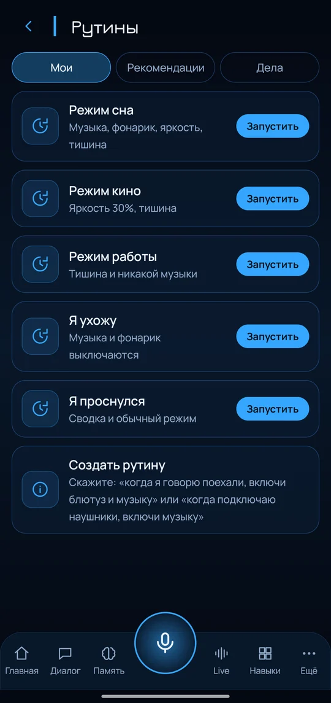
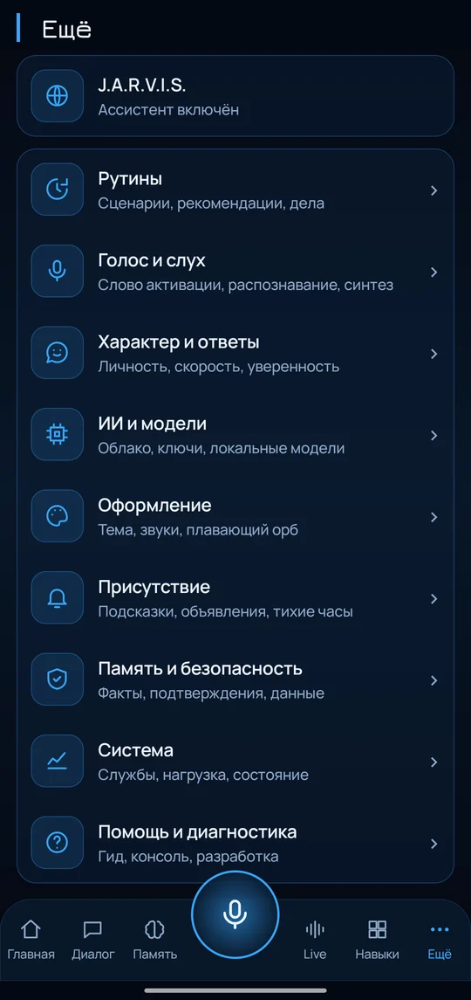
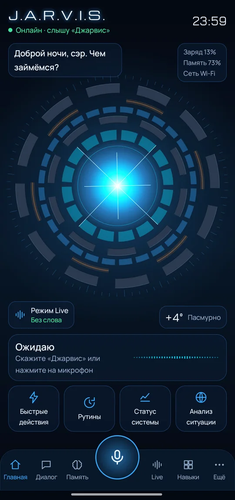
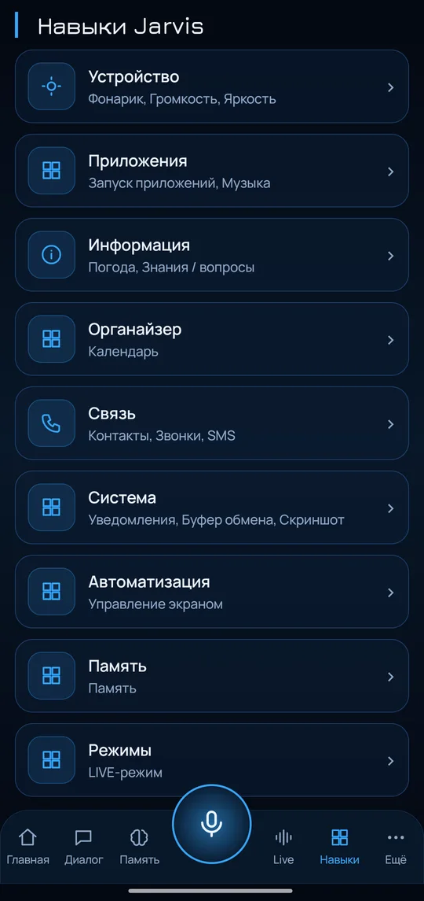
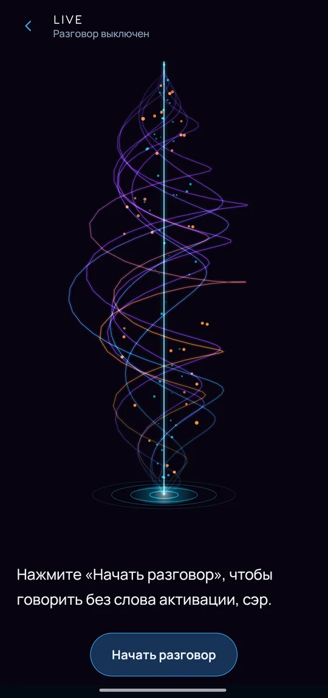
Первый интерфейс Jarvis в стиле инженерной консоли. Его можно включить в любой момент: «Ещё → Помощь и диагностика → Прежний интерфейс».
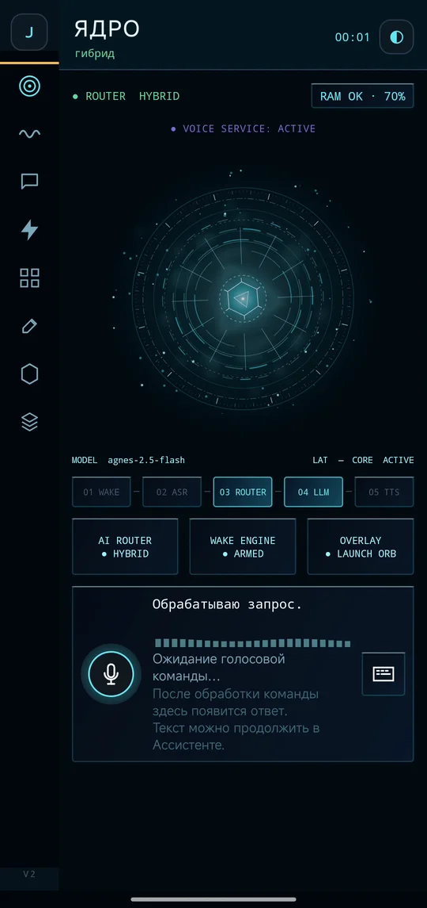
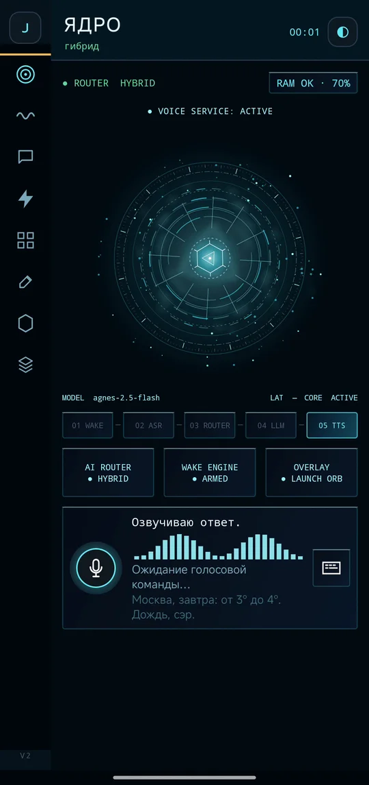
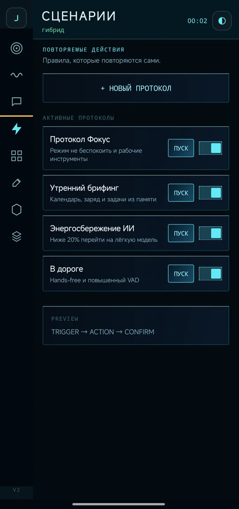
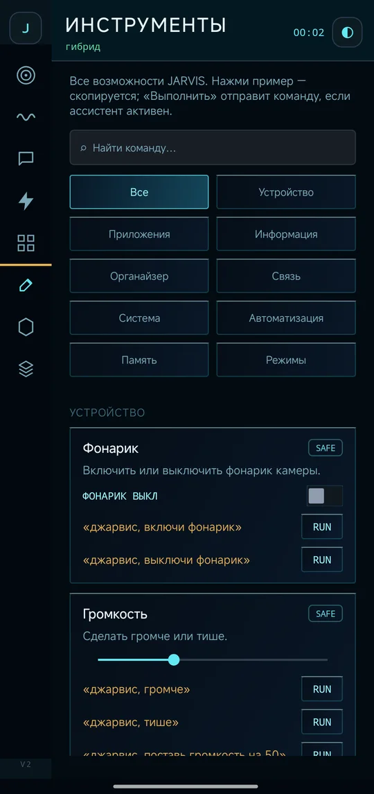
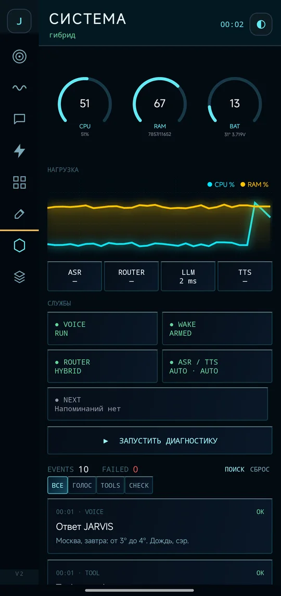
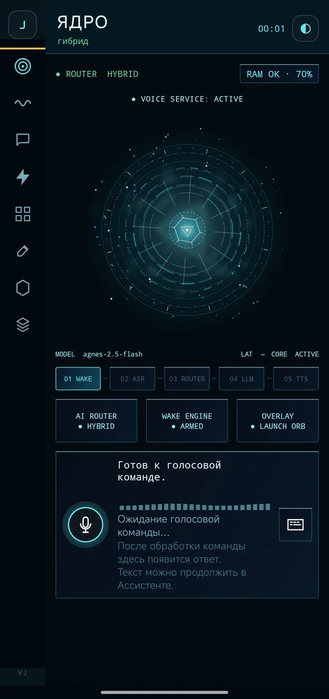
Тестовая версия 0.1.0. Android 10 и новее, процессор arm64, около 200 МБ: модели речи внутри.
jarvis-0.1.0.apk · 201 МБ
Всё, чтобы настроить Jarvis с нуля и пользоваться им каждый день. Нажмите на пункт, чтобы раскрыть его.
Нужен Android 10 или новее и процессор arm64: это почти все телефоны последних лет.
При первом запуске Jarvis покажет список доступов. Пройдите каждый пункт кнопкой «Настроить»:
Звонки, SMS, контакты и календарь Jarvis спросит при первой такой команде.
Совет: в «Ещё → Присутствие → Цифровой помощник» выберите Jarvis. Тогда он откроется долгим нажатием кнопки «Домой».
Без ключей работают команды телефона и локальная модель. С ключами Jarvis отвечает умнее и быстрее. Оба ключа бесплатные, нужен только аккаунт.
gsk_ и больше не покажется.AIza.Куда вставить: Jarvis → вкладка «Ещё» → «ИИ и модели» → «Облачные ключи». Нажмите на строку Groq или Gemini, вставьте ключ и нажмите «Сохранить». Метка сменится на «Сохранён».
Там же оставьте маршрут «Гибрид» и включите «Использовать ИИ-модель»: простое Jarvis решит сам, сложное отправит в облако, а без сети перейдёт на локальную модель.
Ключи хранятся на телефоне в зашифрованном виде и уходят только в Groq и Google. Никому их не пересылайте. В некоторых странах сайты Groq и Google AI Studio открываются только через VPN.
Если слово срабатывает слишком часто или редко, поменяйте «Чувствительность» там же. Если голос стал хуже узнаваться, нажмите «Записать голос заново».
Скажите «Джарвис», дождитесь сигнала или реактора на экране и говорите команду. Можно и сразу одной фразой: «Джарвис, какая погода».
Можно несколько дел сразу: «выключи Wi-Fi и поставь будильник на 8». Звонки, отправку сообщений и удаление Jarvis переспросит.
Live: вкладка Live включает живой разговор без слова «Джарвис». Перебивайте его, когда хотите. Чтобы просто продолжать беседу после ответа, включите «Продолжать разговор» в «Голос и слух».
Начните команду со слов «сделай сам», и Jarvis выполнит её в приложении шаг за шагом:
Скажите «стоп», чтобы прервать. Перед отправкой или оплатой он спросит «да?». Пароли и карты он не вводит никогда. Нужен доступ «Специальные возможности» и разблокированный экран.
Это новая и пока ненадёжная функция: лучше всего она справляется с поиском и открытием разделов.
Скажите правило вслух, и Jarvis будет выполнять его сам:
Список правил, паузы и удаление: «Ещё» → «Рутины», блок «По событиям».
Не помогло: напишите в Telegram @ajikapd993.
Requires Android 10 or newer and an arm64 processor: nearly every phone from recent years.
On first launch Jarvis shows a list of permissions. Go through each item with the “Настроить” (Set up) button:
Calls, SMS, contacts and calendar are requested the first time you use them.
Tip: in “Ещё → Присутствие → Цифровой помощник” (More → Presence → Digital assistant) pick Jarvis to open it with a long press on Home.
Without keys, phone commands and the local model still work. With keys Jarvis answers smarter and faster. Both keys are free; you only need an account.
gsk_ and is shown only once.AIza.Where to paste: Jarvis → “Ещё” (More) → “ИИ и модели” (AI and models) → “Облачные ключи” (Cloud keys). Tap the Groq or Gemini row, paste the key and tap “Сохранить” (Save). The label changes to “Сохранён” (Saved).
On the same screen keep the route on “Гибрид” (Hybrid) and turn on “Использовать ИИ-модель” (Use AI model): Jarvis handles simple things itself, sends hard ones to the cloud and falls back to the local model offline.
Keys are stored encrypted on the phone and go only to Groq and Google. Never share them. In some countries the Groq and Google AI Studio sites open only through a VPN.
If the word triggers too often or too rarely, change the sensitivity there. If recognition gets worse, tap “Записать голос заново” (Record again).
Jarvis understands Russian. Say “Джарвис”, wait for the tone or the reactor on screen and give the command. One phrase works too: “Джарвис, какая погода” (what's the weather).
Several things at once work too: “turn off Wi-Fi and set an alarm for 8”. Calls, sending messages and deleting are confirmed first.
Live: the Live tab starts a live conversation without the wake word. Interrupt any time. To keep talking after a reply, turn on “Продолжать разговор” (Keep the conversation going).
Start a command with “сделай сам” (do it yourself) and Jarvis carries it out in the app step by step: search YouTube, open a settings page, find a place on the map.
Say “стоп” to stop. Before sending or paying it asks “yes?”. It never types passwords or card numbers. Needs Accessibility and an unlocked screen.
This feature is new and not yet reliable: it does best at searching and opening pages.
Say a rule out loud and Jarvis will follow it by itself: “when I plug in headphones, play music”, “when I start charging, lower the brightness”, “when I open YouTube, volume to max”, “every day at 8 am tell me the briefing”.
Rules, pausing and deleting: “Ещё” → “Рутины” (More → Routines), “По событиям” (On events).
Still stuck: message @ajikapd993 on Telegram.